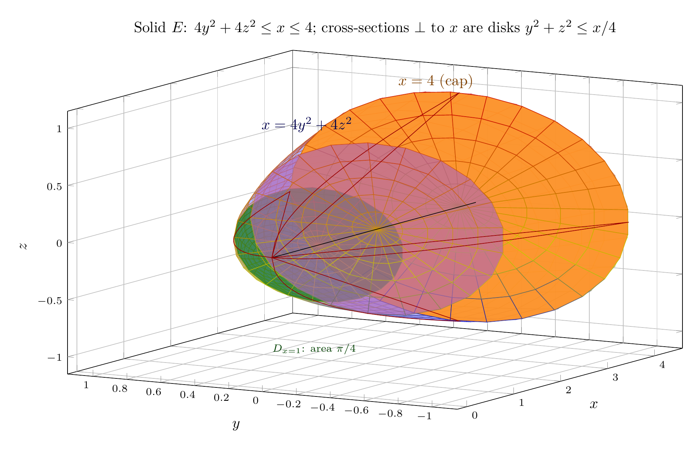
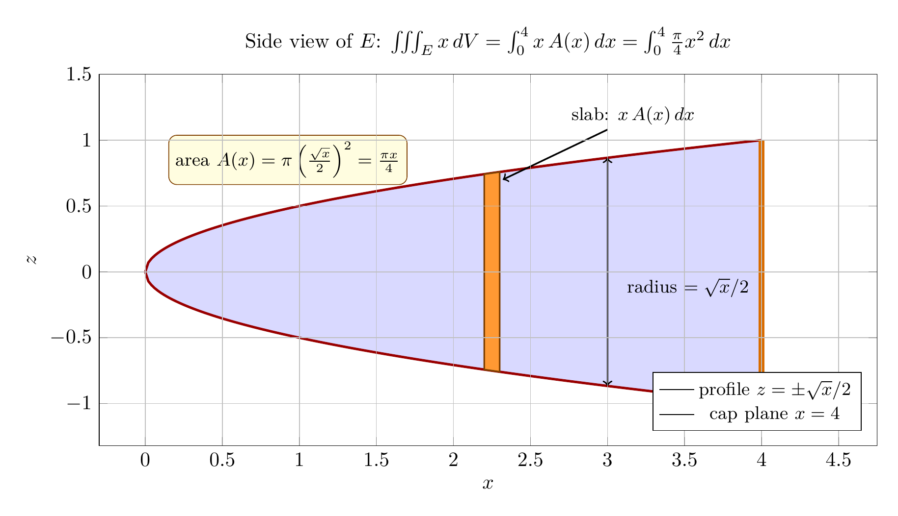

Please solve the problem in the following image.
(Image `20260928_172606_816138_utc_0800_0.png`. Alt text: Image: human_20260928_172606_816138_utc_0800)
20260928_172606_816138_utc_0800_0.png
End of problem
Answer
# Evaluating $\iiint_E x\,dV$ over a paraboloid region
**Problem.** Evaluate $\iiint_E x\,dV$, where $E$ is bounded by the paraboloid $x = 4y^2 + 4z^2$ and the plane $x = 4$.
## Step 1 — Understand the geometry
The paraboloid $x = 4y^2+4z^2$ has its vertex at the origin and opens along the **positive $x$-axis** (it is the usual $z=x^2+y^2$ paraboloid with the roles of $x$ and $z$ swapped). The plane $x=4$ caps it. To find the rim, set $4 = 4y^2+4z^2$, i.e. $y^2+z^2=1$ — a circle of radius $1$.
A key observation: **every cross-section of $E$ perpendicular to the $x$-axis is a disk.** At a fixed $x \in [0,4]$:
$$
4y^2+4z^2 \le x \quad\Longleftrightarrow\quad y^2+z^2 \le \frac{x}{4},
$$
so $D_x$ is the disk of radius $\sqrt{x}/2$, with area $A(x) = \pi\left(\tfrac{\sqrt{x}}{2}\right)^2 = \tfrac{\pi x}{4}$.
The solid is rotationally symmetric about the $x$-axis, and the whole region lives over the unit disk $D$ (the "shadow") in the $yz$-plane.
---
\documentclass[border=10pt]{standalone}
\usepackage{pgfplots}
\pgfplotsset{compat=1.17}
\begin{document}
\begin{tikzpicture}
\begin{axis}[
width=16cm, height=10cm,
xlabel={$x$}, ylabel={$y$}, zlabel={$z$},
xmin=-0.2, xmax=4.6, ymin=-1.15, ymax=1.15, zmin=-1.15, zmax=1.15,
view={-60}{15},
grid=major,
title={Solid $E$: $4y^2+4z^2 \le x \le 4$; cross-sections $\perp$ to $x$ are disks $y^2+z^2 \le x/4$},
tick label style={font=\scriptsize},
]
% paraboloid x = 4(y^2+z^2)
\addplot3[surf, shader=faceted, color=blue!40, opacity=0.5,
domain=0:1, y domain=0:360, samples=24, samples y=24, z buffer=sort]
({4*x^2}, {x*cos(y)}, {x*sin(y)});
% cap disk x = 4
\addplot3[surf, shader=faceted, color=orange!85, opacity=0.95,
domain=0:1, y domain=0:360, samples=6, samples y=30, z buffer=sort]
(4, {x*cos(y)}, {x*sin(y)});
% cross-section disk D_{x=1}: radius 0.5
\addplot3[surf, shader=faceted, color=green!45!black, opacity=0.65,
domain=0:0.5, y domain=0:360, samples=5, samples y=22, z buffer=sort]
(1, {x*cos(y)}, {x*sin(y)});
% cross-section disk D_{x=2.25}: radius 0.75
\addplot3[surf, shader=faceted, color=violet!60, opacity=0.65,
domain=0:0.75, y domain=0:360, samples=6, samples y=22, z buffer=sort]
(2.25, {x*cos(y)}, {x*sin(y)});
% axis of symmetry
\addplot3[black, dashed, thin, domain=0:4.35, samples=2] (x, 0, 0);
% silhouette parabolas (on the surface), thin
\addplot3[red!60!black, thin, domain=0:4, samples=60] (x, {sqrt(x)/2}, 0);
\addplot3[red!60!black, thin, domain=0:4, samples=60] (x, {-sqrt(x)/2}, 0);
\addplot3[red!60!black, thin, domain=0:4, samples=60] (x, 0, {sqrt(x)/2});
\addplot3[red!60!black, thin, domain=0:4, samples=60] (x, 0, {-sqrt(x)/2});
% labels
\node[color=blue!30!black] at (axis cs:0.75,0,1.08) {$x=4y^2+4z^2$};
\node[color=orange!50!black] at (axis cs:3.5,0,1.15) {$x=4$ (cap)};
\node[color=green!25!black] at (axis cs:0.9,0,-0.9) {\scriptsize $D_{x=1}$: area $\pi/4$};
\end{axis}
\end{tikzpicture}
\end{document}

pgfplots_0.png
---
## Step 2 — Method 1 (recommended): slicing by disks perpendicular to the $x$-axis
Because $E$ is the union of the disks $D_x$, $0 \le x \le 4$, the volume element is a slab: $dV = A(x)\,dx = \tfrac{\pi x}{4}\,dx$. The integrand is simply $x$, so
$$
\iiint_E x\,dV \;=\; \int_0^4 x\,A(x)\,dx \;=\; \int_0^4 x\cdot\frac{\pi x}{4}\,dx
\;=\; \frac{\pi}{4}\int_0^4 x^2\,dx
\;=\; \frac{\pi}{4}\cdot\frac{x^3}{3}\Big|_0^4
\;=\; \frac{\pi}{4}\cdot\frac{64}{3} \;=\; \frac{16\pi}{3}.
$$
The side view below shows exactly this: a slab of thickness $dx$ at position $x$ carries mass $x\,A(x)\,dx$, and the profile curve is $z = \pm\sqrt{x}/2$ (i.e. $x = 4z^2$).
---
\documentclass[border=10pt]{standalone}
\usepackage{amsmath}
\usepackage{pgfplots}
\pgfplotsset{compat=1.17}
\begin{document}
\begin{tikzpicture}
\begin{axis}[
width=15cm, height=8cm,
xlabel={$x$}, ylabel={$z$},
xmin=-0.3, xmax=4.75, ymin=-1.32, ymax=1.5,
grid=major, axis on top,
title={Side view of $E$: $\iiint_E x\,dV=\int_0^4 x\,A(x)\,dx=\int_0^4 \frac{\pi}{4}x^2\,dx$},
legend style={at={(0.98,0.04)}, anchor=south east, font=\small},
]
% fills (no stroke) above and below the x-axis
\addplot[domain=0:4, samples=200, draw=none, fill=blue!15] {sqrt(x)/2} \closedcycle;
\addplot[domain=0:4, samples=200, draw=none, fill=blue!15] {-sqrt(x)/2} \closedcycle;
% profile curves (stroke only)
\addplot[red!60!black, very thick, domain=0:4, samples=200] {sqrt(x)/2};
\addplot[red!60!black, very thick, domain=0:4, samples=200] {-sqrt(x)/2};
% cap plane x = 4
\addplot[orange!85!black, line width=3pt] coordinates {(4,-1) (4,1)};
% slab of thickness dx at x = 2.25
\filldraw[fill=orange!80, draw=orange!50!black, thick]
(axis cs:2.2,-0.7416) -- (axis cs:2.2,0.7416) -- (axis cs:2.3,0.7583) -- (axis cs:2.3,-0.7583) -- cycle;
% radius arrow at x = 3
\draw[<->, thick] (axis cs:3,-0.866) -- (axis cs:3,0.866);
\node[anchor=west, font=\small] at (axis cs:3.08,-0.12) {radius $=\sqrt{x}/2$};
% annotations
\node[draw=orange!50!black, fill=yellow!12, rounded corners, font=\small, anchor=west]
at (axis cs:0.15,0.85) {area $A(x)=\pi\left(\frac{\sqrt{x}}{2}\right)^{2}=\frac{\pi x}{4}$};
\draw[->, thick] (axis cs:3.0,1.08) -- (axis cs:2.32,0.7);
\node[anchor=south west, font=\small] at (axis cs:2.72,1.06) {slab: $x\,A(x)\,dx$};
% axes through origin
\addplot[black, thin] coordinates {(-0.3,0) (4.75,0)};
\addplot[black, thin] coordinates {(0,-1.32) (0,1.5)};
\legend{profile $z=\pm\sqrt{x}/2$, cap plane $x=4$}
\end{axis}
\end{tikzpicture}
\end{document}

pgfplots_1.png
---
## Step 3 — Method 2: cylindrical (polar) coordinates in the $yz$-plane
The same solid is described very naturally by treating $(y,z)$ with polar coordinates and letting $x$ play the role of "height":
$$
y = r\cos\theta,\qquad z = r\sin\theta,\qquad dV = r\,dx\,dr\,d\theta .
$$
Projecting $E$ onto the $yz$-plane gives the unit disk, and above each point $(y,z) \in D$ the coordinate $x$ runs from the paraboloid $x = 4(y^2+z^2) = 4r^2$ up to the cap $x = 4$:
$$
E:\quad 0 \le \theta \le 2\pi,\quad 0 \le r \le 1,\quad 4r^2 \le x \le 4 .
$$
Then
$$
\iiint_E x\,dV = \int_0^{2\pi}\int_0^1\int_{4r^2}^{4} x\,\underbrace{r\,dx\,dr\,d\theta}_{dV}
= \int_0^{2\pi}\int_0^1 r\cdot\frac{x^2}{2}\Big|_{x=4r^2}^{4}\,dr\,d\theta .
$$
**Inner ($x$) integral:** $\displaystyle \int_{4r^2}^4 x\,dx = \frac{16 - 16r^4}{2} = 8(1 - r^4)$.
**Middle ($r$) integral:** $\displaystyle \int_0^1 8r(1-r^4)\,dr = 8\left(\frac{1}{2} - \frac{1}{6}\right) = 8\cdot\frac{1}{3} = \frac{8}{3}.$
**Outer ($\theta$) integral:** $\displaystyle \int_0^{2\pi} \frac{8}{3}\,d\theta = \frac{16\pi}{3}.$
For comparison, the pure Cartesian setup (order $dz\,dx\,dy$) is $\displaystyle\int_{-1}^{1}\int_{4y^2}^{4}\int_{-\sqrt{x/4-y^2}}^{\sqrt{x/4-y^2}} x\;dz\,dx\,dy$ — correct but far messier than either method above. The lesson: **match the coordinates to the symmetry of the region** (round cross-sections $\Rightarrow$ polar/cylindrical; flat disks along one axis $\Rightarrow$ slicing).
---